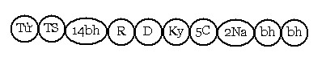

Bài 23 TÂM LỘ TỤC SINH I. ĐỊNH NGHĨA. Paṭisandhi là nối liền, tức là nối tiếp giữa kiếp sống cũ và kiếp sống mới. Vào thời điểm tâm Tử diệt đi, một sát-na tâm mới sanh khởi nối liền giữa hai kiếp sống, thời điểm này gọi là thời tục sinh, tâm làm phận sự nối liền ấy có tên gọi là thức Tục sinh. II. GIẢI VỀ TÂM LỘ TỤC SINH. 1. Lộ tục sinh .Biểu đồ.  Sau khi tâm Tục sinh diệt đi trải qua 14 sát-na hữu phần, bấy giờ lộ tâm Khách đầu tiên sanh lên, gồm có Hướng ý môn, 5 sát-na đổng lực, 2 sát-na Na cảnh rồi dòng hữu phần lại sinh diệt trôi chảy. Tại sao phải có 14 sát-na hữu phần? Theo quy luật, Sanh nghiệp là nghiệp tạo tác danh uẩn và sắc uẩn. Danh uẩn có đủ sức mạnh mới có thể dung nạp, nhận lãnh cảnh mới. Ở cõi năm uẩn, khi khởi đầu một kiếp sống, thời gian để danh uẩn vững mạnh phải trải qua 14 sát-na tâm, đồg thời khi ấy sắc ý vật (hadayavathu) cũng vững vàng. Theo lộ sắc (rūpavīthi), khởi đầu tâm Tục sinh có đoàn ý vật sanh lên, cứ mỗi sát-na tiểu của tâm, sắc ý vật sanh lên 1 đoàn, đến sát-na tâm thứ 17 thì bình số là 51 đòan. Như vậy phải trải qua 1 sát-na tâm Tục sinh, 16 sát-na tâm hữu phần, khi ấy sắc ý vật đã vững mạnh, giúp cho tâm nhận lãnh cảnh mới, làm sanh khởi lộ tâm khách đầu tiên trong cuộc sống mới. Vì sao tâm đổng lực trong lộ Tục sinh chỉ có 5 sát-na? Tâm đổng lực đó là tâm gì? Sở dĩ, đổng lực trong lộ Tục sinh chỉ có 5 sát-na, vì các danh uẩn vừa vững mạnh tuy lãnh nạp được cảnh mới nhưng không thể kéo dài thời gian lâu, ví như đứa bé vừa biết đi, tuy đi được nhưng không thể đi lâu Và đổng lực trong lộ Tục sinh phải là tâm tham đồng sanh với hỷ thọ, nó sanh lên để làm phận sự "ưa thích" với kiếp sống mới (bhava- nikānti javana), cho dù là Bồ Tát Chánh Đẳng Giác tái sanh trong kiếp chót, đổng lực này cũng phải là tâm tham, vì nó chịu ảnh hưởng từ tâm Tục sinh, tâm Tục sinh bị thúc đẩy bởi Vô minh tùy miên (avijjānusaya) và Ái tùy miên (tanhānusaya). Chính Ái tùy miên tạo thành sanh hữu (Jātibhava) và nghiệp hữu (kammabhava), do đó đổng lực trong tâm lộ Tục Sinh chính là loại tâm tham để hòa nhập với kiếp sống mới. Vì sao có tâm Na cảnh trong lộ Tục Sinh? Trong cõi Dục giới, tất cả những tâm lộ Tục Sinh đều phát sanh Na cảnh vì ảnh hưởng của tâm tham đối với cảnh dục giới quá mạnh. Còn ở cõi Sắc và Vô Sắc thì Na cảnh không xuất hiện, tuy đổng lực là tham nhưng nhiệm vụ chính của đổng lực trong lộ Tục Sinh là "bám" vào cõi mới, nếu sanh hữu thích hợp với nó, nó sẽ "bám cứng" do đó có Na cảnh, bằng không thì chỉ "bám" mà thôi. Và cảnh trong lộ Tục Sinh này phải là cảnh cực rõ hoặc rõ. 2. Cảnh theo thời của tâm Tục sinh. Dĩ nhiên tâm Tục sinh có cảnh là 1 trong 3 cảnh: Cảnh nghiệp, cảnh nghiệp tướng và cảnh Thú tướng, đây là do ảnh hưởng của đổng lực trong lộ cận tử, nhưng ba cảnh này được quy theo thời (kāla) như thế nào? Tùy theo sự hiện bày của cảnh, các vị Luận sư A Tỳ Đàm phân ra:
Như vậy, cảnh nghiệp - cảnh nghiệp tướng có thể là cảnh quá khứ, có thể là cảnh hiện tại. Cảnh thú tướng có thể là cảnh hiện tại, có thể là cảnh "khó định" (navattabbārammaṇa) (na là không, vattabba là nói đến – navattabba là cảnh thiền tướng đưa tái sanh về cõi Đáo đại). Chúng ta có những trường hợp như sau: a) Từ nhàn cảnh (sugati) tái sanh về khổ cảnh (dugati). Từ nhàn cảnh tái sanh về khổ cảnh chỉ có ở 7 cõi vui Dục giới, chư Phạm thiên ở cõi Sắc hay cõi Vô sắc, khi hết phước nếu có tái sanh về Dục giới, thấp nhất cũng là cõi người và là người tam nhân. Một chúng sanh tạo ác nghiệp, khi vào lúc sắp lâm chung ác nghiệp hoặc ác nghiệp tướng bao quanh, xuất hiện ở ý môn. Lộ cận tử trong trường hợp này có 3 loại tâm khách là: Hướng ý môn, đổng lực bất thiện và Na cảnh, tiếp theo là Tử tâm sanh khởi rồi diệt. Tâm tục sinh sanh lên nhận lấy cảnh nghiệp hay Cảnh nghiệp tướng, trường hợp này cả Tử tâm lẫn thức Tái tục có cảnh là cảnh quá khứ. Trường hợp tạo ác nghiệp, khi cận tử xuất hiện cảnh dugatinimittārammāṇa (khổ thú tướng), như lửa địa ngục ... đi vào lãnh vực ý môn, lộ cận tử sanh khởi nhận cảnh khổ thú tướng với ba loại tâm khách: Hướng ý môn, 5 sát-na đổng lực bất thiện, 2 sát-na Na cảnh rồi Tử tâm. Như vậy cảnh này đã trải qua 11 sát-na tâm (kể cả 2 sát-na hữu phần Rúng động và hữu phần Dứt dòng). Kế đến thức Tục sinh sanh lên, cũng nhận cảnh Khổ thú tướng . Đây là trường hợp tâm Tử lẫn tâm Tục sinh có cảnh hiện tại. Với trường hợp khác như sau, khi cảnh nghiệp tướng xuất hiện qua 5 môn, cảnh xấu này là nguyên nhân của tham dục, sân hận ... hiện vào 1 trong 5 môn, trải qua 16 sát-na tâm của lộ cận tử (3sát-na hữu phần, Hướng ngũ môn, 1 thức như Nhãn thức chẳng hạn, 1 Tiếp thâu, 1 Quan sát, 1 Đoán định, 5 đổng lực, 2 Na cảnh và 1 Tử tâm). Cảnh khi ấy còn tuổi thọ 1 sát-na tâm, tâm Tái tục sanh lên nhận lấy cảnh khổ nghiệp tướng này. Đây là Tử cảnh hiện tại, Tục sinh cảnh hiện tại. Cũng trong trường hợp này, nếu có xen hữu phần rồi Tử, thì Tử cảnh hiện tại, Tục sinh cảnh quá khứ. b) Từ khổ cảnh sanh về khổ cảnh Chúng sanh ở trong khổ cảnh, hoặc vì ác quả còn nặng, hoặc tích trữ nhiều ác nghiệp. Khi chết ở khổ cảnh lại phải tái sanh về khổ cảnh, như trường hợp thoát khỏi Địa ngục giới, nhưng do ác quả còn dư sót lại sanh về Ngạ quỷ giới hay như con cá vàng Aciravatī (hậu thân của Tỷ kheo Kapila) sau khi chết lại rơi xuống địa ngục ... Nếu là cảnh nghiệp, cảnh nghiệp tướng, xuất hiện ở ý môn trong thời cận tử, chúng sanh này Tử cảnh quá khứ, Tục sinh cảnh quá khứ. Nếu cảnh nghiệp tướng xuất hiện ở 1 trong 5 môn của lộ cận tử thì sẽ Tử cảnh hiện tại Tục sinh cảnh hiện tại (hay Tục sinh cảnh quá khứ nếu cảnh đồng diệt với tâm Tử). Nếu cảnh Thú tướng xuất hiện ở ý môn của lộ cận tử, sẽ Tử cảnh hiện tại, Tục sinh cảnh hiện tại. c) Từ khổ cảnh sanh về nhàn cảnh Với 1 chúng sanh đang ở khổ cảnh (như súc sanh chẳng hạn) đã tích lũy những nghiệp vô tội, thì thiện nghiệp hoặc thiện nghiệp tướng hay thiện thú tướng (sugatinimitta) làm cảnh trong lộ cận tử cho chúng sanh ấy, tương tự như mô thức đã giải ở trên, chỉ khác cảnh nghiệp, cảnh nghiệp tướng và cảnh thú tướng tốt đẹp và đổng lực trong lộ cận tử là thiện Dục giới. d) Từ nhàn cảnh sanh về nhàn cảnh. Ở đây, nên ghi nhận có 2 loại thiện nghiệp được tích trữ: thiện nghiệp Dục giới và thiện nghiệp Đáo Đại (tức là loại nghiệp cho quả Tục sinh về cõi Sắc hay cõi Vô sắc). Đối với người tích lũy thiện nghiệp Dục giới, khi cận tử có thể có 1 trong 3 cảnh: Cảnh nhiệp, cảnh nghiệp tướng và cảnh thú tướng. Riêng chúng sanh tích lũy thiện nghiệp Đáo Đại thì chỉ có 1 cảnh trong thời cận tử, đó là cảnh Nghiệp tướng mà thôi. * Người có thiện nghiệp Dục giới - Khi sắp lâm chung, nếu có cảnh là cảnh nghiệp hoặc cảnh Nghiệp tướng nơi ý môn, tâm Tử sanh lên rồi diệt đi, tâm Tục sinh hiện khởi nhận lấy cảnh Nghiệp hoặc cảnh nghiệp tướng, tái sanh về nhàn cảnh Dục giới, vì bị dẫn dắt bởi sức mạnh của phiền não cấu uế chưa sát trừ. Đây là Tử cảnh quá khứ, Tục sinh cảnh Quá khứ. - Khi cảnh nghiệp tướng phát sanh tại 1 trong 5 môn, chúng sanh ấy tử cảnh hiện tại và tâm Tục sinh có cảnh Hiện tại. - Khi cảnh thú tướng nhàn cảnh như thai bào người mẹ, hay hoa viên nơi Thiên cung, cung điện, cây Như ý ... xuất hiện nơi ý môn làm cảnh cho lộ cận tử, chúng sanh này Tử cảnh hiện tại, Tục sinh cảnh Hiện tại. * Người có Thiện nghiệp Đáo Đại. Người tích lũy thiện nghiệp Đáo đại, lộ cận tử không có Na cảnh. Trong lộ cận tử chỉ có cảnh nghiệp tướng liên quan đến Thiền án xứ như đất, nước, lửa, gió ... Có 2 loại cảnh nghiệp tướng trong trường hợp này: - Cảnh nghiệp tướng là Quang tướng Chế định đối với thiện Sắc giới, và 2 loại thiện Vô sắc giới là: thiện Không vô biên xứ, thiện Vô sở hữu xứ chúng sanh này Tử cảnh quá khứ, Tục sinh cảnh "khó định rõ" (navattabbārammaṇa), (có thể gọi là cảnh chế định của thiền) . - Cảnh nghiệp tướng là Quang tướng chân đế (paramatthapaṭibhāga), đối với thiện Thức vô biên xứ và thiện Phi tưởng phi phi tưởng xứ. Chúng sanh này có Tử cảnh quá khứ, Tục sinh cảnh quá khứ. Như Pāli đã dẫn giải: "Rūpāvacarapaṭisandhiyā panapaññattibhūtaṃ kammanimittamevārammaṇa hoti. Tathā āruppapaṭisandhiyā ca mahaggatabūtaṃ paññattibhūtaṃ ca kammanimittameva yathārahaṃ ārammaṇaṃ hoti". "Khi Tục sinh ở Sắc giới, cảnh nghiệp tướng là Chế định. Khi Tục sinh ở Vô sắc giới, cảnh nghiệp tướng thuộc về Đáo đại (mahaggata) hay thuộc về Chế định tùy theo trường hợp." 3. Bao nhiêu cách Tục sanh? Có tất cả 20 cách Tục sinh, đó là 19 tâm Tục sinh và Tục sinh về cõi Vô Tưởng (asaññābhūta). Nói về cách tục sinh nơi cõi Vô tưởng, khi tâm tử diệt đi, chúng sanh này do nghiệp Vô tưởng dẫn dắt đưa tái sanh về cõi Vô Tưởng, phận sự tái sanh này không do danh pháp đảm nhận, mà do đòan Mạng quyền đảm trách. Chúng sanh này vì không chấp trước danh uẩn, khi chứng đắc Ngũ thiền sắc giới, có tâm niệm "không muốn có tâm thức", do năng lực Thiền được huân tập, nên khi sắp mệnh chung, Nghiệp tướng liên quan với tác ý "không muốn có tâm" làm cảnh trong lộ cận tử, nghĩa là trong lộ cận tử vẫn có cảnh là Nghiệp tướng, khi tâm Tử diệt, tâm Tục sinh cũng không sanh, chỉ có đòan Sắc mạng quyền sanh khởi giúp chúng sanh này tái sanh về cõi Vô tưởng, có tuổi thọ là 500 kiếp trái đất ở trong trạng thái Vô tâm. Mười chín tâm Tục sinh sẽ đưa chúng sanh về sanh vức thích hợp với chúng như: - Bốn tâm quả Vô sắc giới cho tái sanh về bốn cõi Vô sắc tương ứng. - Tâm quả Ngũ thiền sắc giới cho tái sanh về 6 cõi Sắc giới là: Cõi Quảng Quả và 5 cõi Tịnh cư của Bậc Bất Lai. Bậc Sơ Quả, Nhị Quả và phàm Tam nhân khi chứng đạt Ngũ thiền sắc giới, sẽ sanh về cõi Quảng Quả. Bậc Bất Lai, khi chứng Ngũ thiền sắc giới, nếu năm quyền đồng đẳng cũng sanh về cõi Quảng Quả, nếu 1 trong năm quyền mạnh sanh về cõi Tịnh Cư như: Vị có Tín quyền mạnh sẽ sanh về cõi Vô phiền thiên (Avihā). Vị có Tấn quyền mạnh sẽ sanh về cõi Vô Nhiệt thiên (Atappa). Vị có Niệm quyền mạnh sẽ sanh về cõi Thiện Hiện thiên (Sudassa). Vị có Định quyền sẽ sanh về cõi Thiện Kiến thiên (Sudassī). Vị có Tuệ quyền mạnh sẽ sanh về cõi sắc Cứu cánh (Akaniṭṭha). Vị Bất lai không chứng thiền sẽ sanh về cõi Sơ thiền . Các Ngài nói rằng: "Vị Bất Lai không có quy luật tái sanh nhất định, không thể nói vị ấy chỉ sanh vào cõi này mà không sanh vào cõi khác" (Te pana aññattha na nibbattantīti niyamonatthi). Tâm quả Tứ thiền cho tái sanh về 3 cõi Tam thiền. Tâm quả Tam thiền và Nhị thiền cho tái sanh về 3 cõi Nhị thiền Tâm quả Sơ thiền cho tái sanh về 3 cõi Sơ thiền. Tâm quả Dục giới có 2 nhân (vô tham, vô sân) hay 3 nhân (vô tham, vô sân, vô si) cho tái sanh vào 7 cõi vui Dục giới. Tâm Quan sát xả thọ quả thiện, cho tái sanh làm người Lạc vô nhân ở cõi người, Phi hảo lạc A Tu La ở cõi Tứ đại vương (mārājabhūmi). Tâm Quan sát xả thọ quả bất thiện cho tái sanh về 4 khổ cảnh (dugati). 4. Cách cho quả của đổng lực bất thiện và thiện Dục giới Trong 12 tâm bất thiện, mỗi tâm cho 7 quả bất thiện, riêng tâm Si hợp phóng dật (uddhacca saṃpayutta mohamūlacitta), không đủ sức mạnh cho quả Tục sinh, như Pāli rằng: "Etthākusalakammamuddhaccarahitaṃ apāyabhūmiyaṃ paṭisandhiṃ janeti". "Ở đây, trừ phóng dật (uddhacca) các bất thiện nghiệp còn lại khiến sanh vào (4) cõi khổ (apāyabhūmi)". Riêng các tâm thiện Dục giới cho quả như sau: Tâm thiện có trí đủ ba Tư (cetanā) cho 16 tâm quả dị thục thiện Dục giới. Tâm thiện có trí thiếu 1 hay 2 trong ba Tư và tâm thiện không có trí đủ ba Tư cho 12 tâm quả dị thục thiện (trừ 4 tâm quả dị thục có ba nhân). Tâm thiện không có trí thiếu 1 hay 2 trong ba Tư cho 8 tâm quả dị thục thiện vô nhân. Nhưng có những vị Luận sư thuộc bộ phái của Đại Đức Mahādhammarakkhita ở chùa Moravapi tại Tích Lan cho rằng: Những tâm Vô trợ (asaṅkhāra) không thể cho tâm quả dị thục hữu trợ (sa saṅkhāra) và ngược lại tâm thiện hữu trợ không thể cho tâm quả dị thục vô trợ. Theo các vị này thì: 1 tâm thiện có trí vô trợ đủ ba Tư có thể sanh 12 tâm quả dị thục thiện, là 8 tâm quả thiện vô nhân và 4 tâm quả thiện vô trợ. Tương tự, 1 tâm thiện có trí hữu trợ đủ ba Tư cho 12 tâm quả: 8 tâm quả thiện vô nhân, 4 tâm quả thiện có trợ giúp. Một tâm thiện có trí vô trợ, không đủ ba Tư và một tâm thiện không trí vô trợ đủ ba Tư, cho 10 tâm quả dị thục là: 8 tâm quả thiện vô nhân và 2 tâm quả thiện không trí vô trợ. Hai tâm thiện không trí hữu trợ đủ ba Tư cũng cho 10 tâm quả dị thục là: 8 tâm quả thiện vô nhân và 2 tâm quả thiện không trí hữu trợ. Một tâm thiện không trí hữu trợ, không đủ ba Tư chỉ cho 8 tâm quả dị thục thiện vô nhân. -ooOoo- Ðầu trang | Mục lục | 01 | 02 | 03 | 04 | 05 | 06 | 07 | 08 | 09 | 10 | 11 | 12 | 13 | 14 | 15 | 16 | 17 | 18 | 19 | 20 | 21 | 22 | 23 | 24 | 25 |